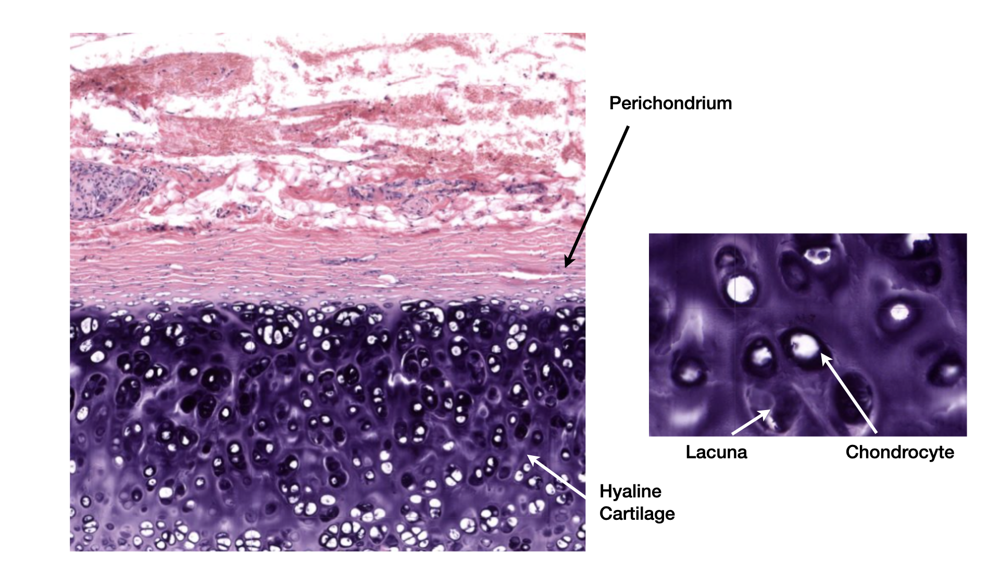
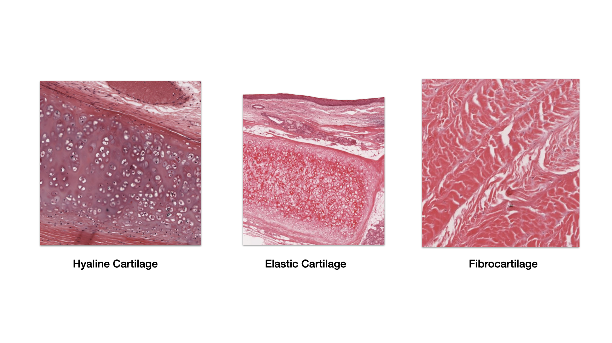
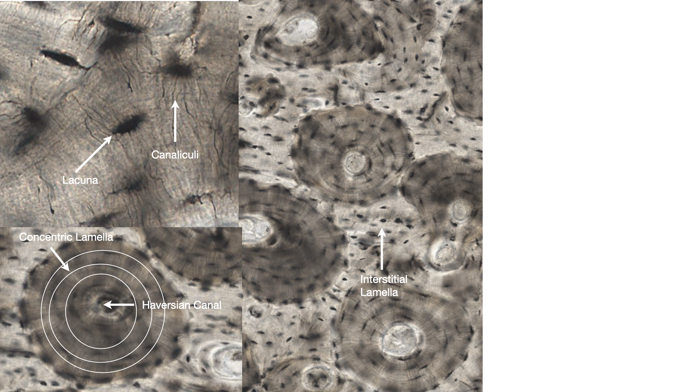
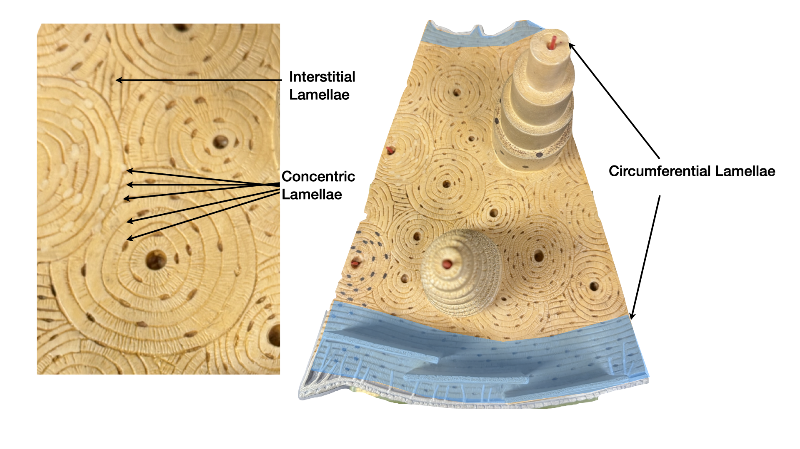
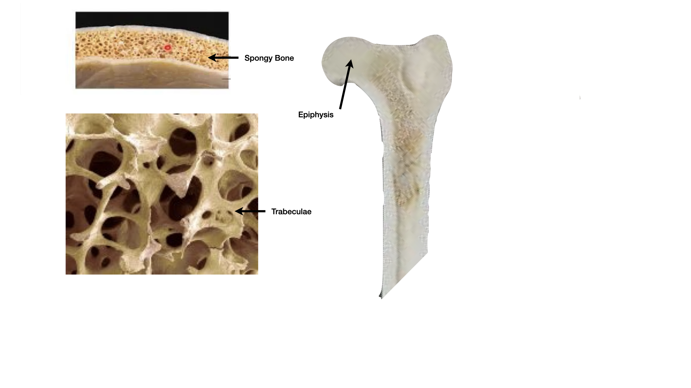

Focus: Human Anatomy
Bone Tissue & Cartilage
Bone is a living, dynamic connective tissue: an organic framework hardened by mineral, constantly built, repaired, and resorbed by its cells. We move from cartilage, to the architecture of a whole bone, to the tissue itself, then to how bone forms, grows, heals, and fails. Dr. Sharilyn Rennie
Download the PowerPoint · need a PDF? Download the accessible PDF from Canvas.
Part 1
Cartilage, the Supporting Framework
Cartilage is the soft supporting tissue and the template most bones are built on.
Part 1 · Cartilage
Cartilage: cells, matrix, and growth
- Cells. Chondroblasts secrete matrix, then become chondrocytes trapped in lacunae.
- Matrix. A firm gel of ground substance (chondroitin sulfate, water) with collagen and sometimes elastic fibers. It is avascular with no nerves, so it heals poorly.
- Perichondrium. A connective tissue sheath carrying the blood supply and stem cells (absent on fibrocartilage and articular cartilage).
- Growth: appositional (added to the surface from the perichondrium) and interstitial (chondrocytes divide from within).

Part 1 · The three cartilages
Hyaline, elastic, and fibrocartilage
- Hyaline (most common): fine collagen masked by glassy matrix. Articular surfaces, costal cartilage, trachea and bronchi, nose, epiphyseal plates, fetal skeleton.
- Elastic: elastic fibers added, so it springs back. External ear, epiglottis.
- Fibrocartilage: thick parallel collagen with rows of chondrocytes; resists compression and tension. Intervertebral discs, menisci, pubic symphysis.

Part 2
Bone as an Organ
A long bone holds compact and spongy bone, cartilage, marrow, vessels, and nerves.
Part 2 · Why bone
Functions and the shape classes
- Support, protection, movement (levers for muscles).
- Mineral reservoir (about 99% of body calcium, plus phosphate).
- Blood cell formation in red marrow; fat storage in yellow marrow.
- Shape classes: long, short, flat, irregular, sesamoid.
Part 2 · Long bone
Gross anatomy of a long bone
- Diaphysis: shaft of compact bone around the medullary cavity.
- Epiphyses: spongy-bone ends under a compact shell, capped by articular cartilage.
- Metaphysis: holds the epiphyseal plate (growing) or line (done).
- Periosteum: outer fibrous + inner osteogenic layers, locked on by perforating (Sharpey's) fibers; anchors tendons and ligaments.
- Endosteum lines the cavity and canals; nutrient foramen admits vessels.
Part 3
Bone Tissue, Up Close
The matrix gives two strengths, four cells keep it alive, and the lamellae show how it is built and remodeled.
Part 3 · The matrix
Two materials, two strengths
Part 3 · The cells
The four bone cells
Part 3 · Compact bone
Compact bone: the osteon
- Compact bone is built from osteons (Haversian systems).
- Central (Haversian) canal carries a vessel and nerve; concentric lamellae ring it.
- Osteocytes in lacunae connect by canaliculi.
- Perforating (Volkmann's) canals run crosswise, linking canals and the periosteum.

Part 3 · Lamellae
The three kinds of lamellae
- Concentric lamellae: the rings of an osteon around its central canal.
- Interstitial lamellae: incomplete fragments between osteons, the leftovers of old osteons partly resorbed during remodeling.
- Circumferential lamellae: broad sheets wrapping the whole bone just deep to the periosteum (outer) and around the marrow cavity (inner); they resist twisting.

Part 3 · Spongy bone
Spongy (cancellous) bone
- An open lattice of trabeculae, with no osteons.
- Trabeculae line up along the bone's lines of stress.
- Each still has lamellae, lacunae, osteocytes, and canaliculi, but is fed by diffusion from marrow.
- Spaces hold red marrow; between two compact plates of a flat bone it is called diploe.

Part 4
Formation, Growth & Repair
Bone forms two ways, lengthens through five plate zones, widens at the surface, and heals a fracture in four stages.
Part 4 · Intramembranous
Intramembranous ossification
Bone forms directly within a membrane of mesenchyme. It builds the flat bones of the skull and the clavicle.
Part 4 · Endochondral
Endochondral ossification, stage by stage
Bone replaces a hyaline cartilage model. This builds most bones, including all long bones.
- 1. A cartilage model forms; the perichondrium becomes periosteum and lays a bony collar.
- 2. Cartilage in the center calcifies and its chondrocytes die.
- 3. Vessels invade the primary ossification center; osteoblasts build bone in the diaphysis.
- 4. Osteoclasts hollow the medullary cavity; ossification spreads toward the ends.
- 5. Secondary ossification centers form in the epiphyses after birth.
- 6. Cartilage remains only as articular cartilage and the epiphyseal plate.
Part 4 · Compare & contrast
Two kinds of ossification, compared
Use this to answer comparison questions, like "which bones form each way?"
Part 4 · Growth in length
The epiphyseal plate and its five zones
A bone lengthens at the plate: cartilage is added on the epiphyseal side and replaced by bone on the diaphyseal side.
- 1. Resting (reserve): anchors the plate to the epiphysis.
- 2. Proliferation: chondrocytes divide and stack like coins, lengthening the bone.
- 3. Hypertrophy: chondrocytes enlarge.
- 4. Calcification: matrix calcifies, chondrocytes die.
- 5. Ossification: bone replaces calcified cartilage on the diaphysis side.
Part 4 · Width & remodeling
Growth in width, remodeling, and closure
- Appositional growth: periosteal osteoblasts add bone to the surface while endosteal osteoclasts widen the medullary cavity.
- Remodeling: lifelong resorption and rebuilding, tuned by stress (Wolff's law) and calcium-regulating hormones.
- Closure: in late adolescence the plate ossifies into the epiphyseal line, and lengthwise growth stops.
Part 4 · Bone repair
How a fracture heals: four stages
Bone repair is its own ordered process (extends beyond the notes).
- 1. Fracture hematoma. Torn vessels bleed; a clot forms and nearby bone cells die.
- 2. Fibrocartilaginous (soft) callus. Fibroblasts and chondroblasts bridge the gap with collagen and cartilage.
- 3. Bony (hard) callus. Osteoblasts replace the soft callus with spongy bone over weeks.
- 4. Bone remodeling. Osteoclasts and osteoblasts reshape the callus into compact bone, restoring the bone's form.
Part 4 · Fracture types
Naming fractures
- Closed (simple) vs open (compound): skin intact vs broken.
- Complete vs incomplete: through the whole bone vs partial (greenstick, common in children).
- Transverse (straight across), oblique (angled), spiral (twisting force).
- Comminuted (three or more fragments), compression (crushed, as in vertebrae), impacted (ends driven together), depressed (pushed inward, as in the skull).
- Displaced vs nondisplaced: ends out of line vs aligned.
Part 5
Check Your Understanding
From recall to reasoning, then the key takeaways.
Part 5 · Recall (DOK 1)
Name the zone
Depth of Knowledge 1 · Recall
Which zone of the epiphyseal plate lengthens the bone as chondrocytes divide and stack?
Answer
Proliferation zone. Dividing, stacking chondrocytes push the epiphysis away, lengthening the bone.
Part 5 · Skill / concept (DOK 2)
Order the repair
Depth of Knowledge 2 · Skill / concept
Put fracture healing in order.
Answer
Hematoma, soft callus, hard callus, remodeling. Clot first, then cartilage bridge, then spongy bone, then reshaping.
Part 5 · Strategic reasoning (DOK 3)
Reason it through
Depth of Knowledge 3 · Strategic reasoning
A child with bowed legs has soft, poorly mineralized bone but normal collagen. Which deficiency best explains this?
Answer
Vitamin D (rickets). Mineralization fails while collagen is intact, so bone is soft and bends rather than brittle.
Wrap-up
Key takeaways
- Cartilage is hyaline, elastic, or fibrocartilage; it grows by apposition and interstitially.
- A long bone = diaphysis + epiphyses, wrapped by periosteum (anchored by Sharpey's fibers) and lined by endosteum.
- Matrix = osteoid (flexibility) + hydroxyapatite (hardness); four cells build, maintain, and carve it.
- Compact bone = osteons with concentric, interstitial, and circumferential lamellae; spongy bone = trabeculae.
- Bone forms by intramembranous or endochondral ossification, lengthens through the five plate zones, and widens by apposition.
- A fracture heals: hematoma, soft callus, hard callus, remodeling.
- Bone fails through osteopenia/osteoporosis, rickets/osteomalacia (vitamin D), osteomyelitis (infection), and osteosarcoma (cancer).
Part 6
When Bone Fails
Common metabolic, infectious, and neoplastic bone disorders (beyond the Week 2 notes).
Part 6 · Metabolic
Osteopenia, osteoporosis, and soft bone
- Osteopenia: below-normal bone mass, a warning stage before osteoporosis.
- Osteoporosis: resorption outpaces deposition, so bone becomes porous and fragile; fractures of the hip, vertebrae, and wrist rise. Risk climbs with age and after menopause (falling estrogen).
- Rickets (children) / osteomalacia (adults): vitamin D deficiency (or low calcium/phosphate) leaves matrix poorly mineralized, so bones soften and bend (bowed legs in children).
Part 6 · Infection & tumor
Osteomyelitis and osteosarcoma
- Osteomyelitis: infection of bone and marrow, usually bacterial (often Staphylococcus aureus). Bacteria reach bone three ways: hematogenous spread (through the bloodstream, the most common route in children, lodging in the metaphysis), contiguous spread (from an adjacent infection: skin or soft tissue, sinus, a tooth, or a prosthetic joint), and direct inoculation (trauma, an open fracture, a puncture wound, or surgery).
- Osteosarcoma: the most common primary malignant bone tumor; often strikes adolescents and tends to arise near the knee (distal femur or proximal tibia).